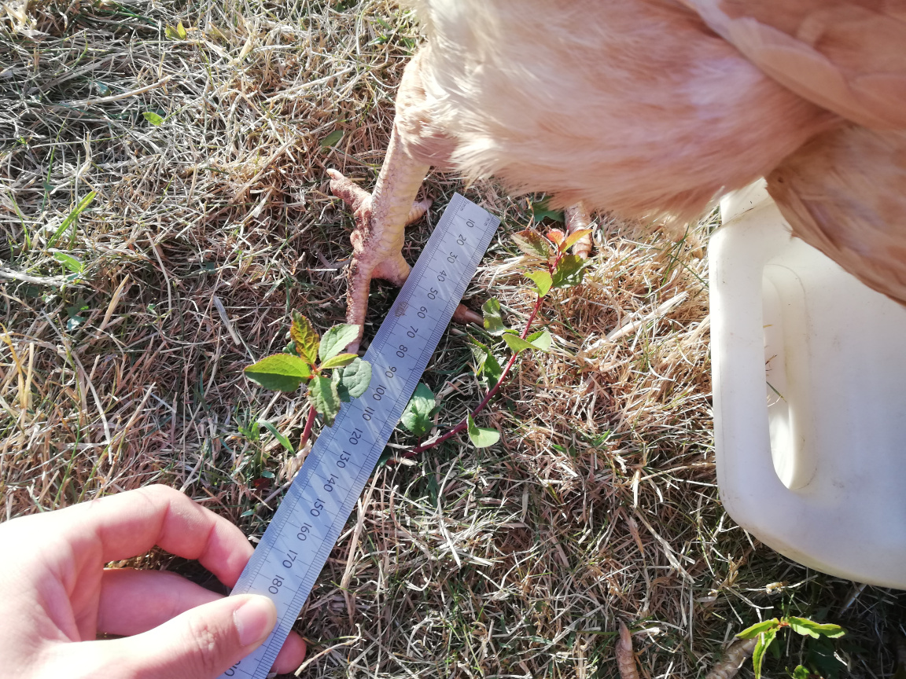
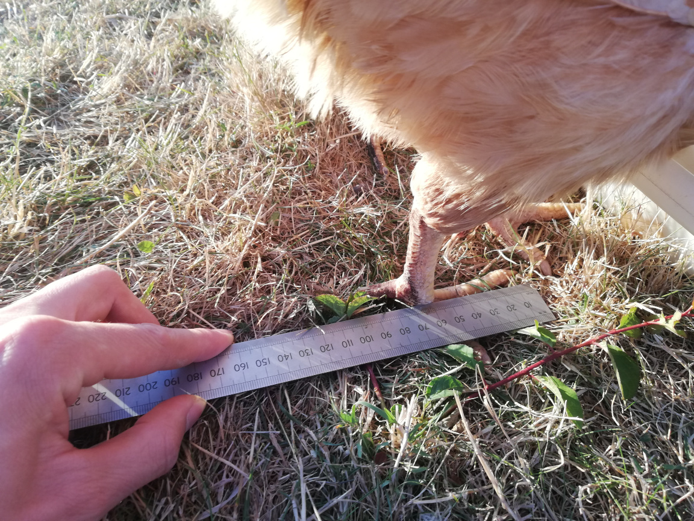
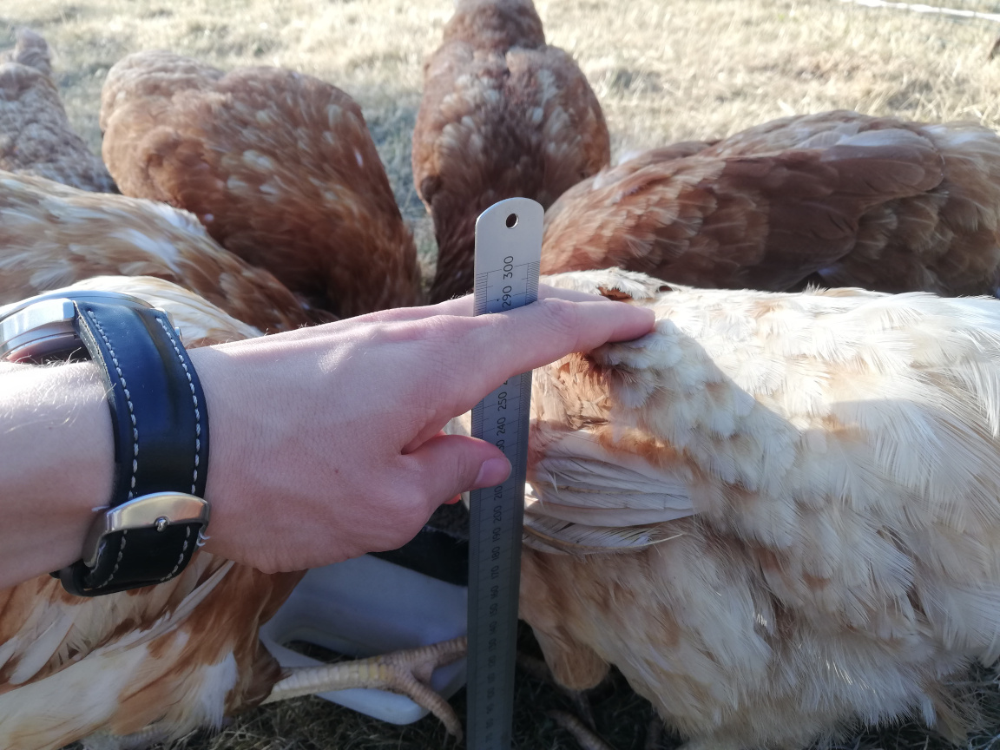

Written on: 2022-08-11
Here's a hot take. I think that riding a unicycle isn't significantly harder than walking.
In fact, I would go so far as to say that unicycling and walking are roughly the same difficulty. This is not to say that unicycling is extremely easy but instead that, if you actually stop and think about it, walking is actually much, much harder than people give it credit for.
What Do You Mean, Walking is Hard!?
Major Difficulty #1: Human Feet are Really Small
For bipedal animals (i.e. those that walk on two legs) humans have crazily small feet.
Let's do some quick calculations. To make a fair comparison between animals of different sizes, we
can compute the unitless ratio height / sqrt(foot area) - i.e. treat each species' feet as perfect
squares with the same area as their actual feet. We should really be computing the height of each
species' centre of mass rather than height, because that's super hard to measure so I'm not going to
bother. I will, however, be ignoring the chickens' heads to get a bit closer to their centre of
mass (chicken's heads are really tiny compared to their bodies. It's no wonder they're not very
smart). We're also only considering one foot, but that's what animals have to balance on when
walking.
The mean human foot length is about 26cm - ironically, not quite one foot - and the width is about
7.8cm. The average height is about 180cm, which gives us a foot size factor of
180 / sqrt(26 * 7.8) ~= 13. In other words, we're roughly thirteen times taller than our feet.
Contrast this with, say, a chicken. I just happen to currently have twelve chickens in my parents' back garden, so they make useful test subjects. We also have no shortage of hilariously derpy chicken photos - they are, after all, hilariously derpy creatures - but here's a particularly good one. Meet Flecky, our glamorous assistant:

Now, whilst we distract the chickens with food (chicken food, my favourite!), I swoop in with my trusty metal ruler and measure Flecky's height and foot size:
  
The trusty metal ruler concludes that Flecky is about 26cm tall and each of her feet are 10cm
long and 9cm wide. All incredibly rough measurements, but it's fine - this is not exactly a
ground-breaking physics experiment. Anyway, pulling out our formula from earlier, we compute
Flecky's foot size factor to be 26 / sqrt(8 * 9) ~= 3. For comparison, the value for a human was
13.
Compared to their height, humans balance on feet that are four times smaller than those of a chicken. If we were to scale a chicken so that it's the same height as a human, we can see just how much easier it is for chickens to balance:

Major Difficulty #2: We Can Fall in Any Direction
Here's another way walking is hard: when walking, you can fall over in any direction.
OK, I hear you, this is not exactly the deep revelation you were after. But consider cycling: a bike can only fall in one axis: left or right. It is technically possible to make a bike fall over forwards (I've done it) but it takes serious amounts of energy and you have to be going quite fast before it's possible at all. It's really not something you have to worry about while learning. And other vehicles, like cars or tricycles, will literally stay upright by themselves. You totally can still flip cars but, as with bikes, it's pretty hard.
Walking involves two axis of freedom in which we have to balance: left/right (aka 'roll') and front/back (aka 'pitch'). The third axis is 'yaw' and involves spinning on the spot. Clearly it's not possible to fall by spinning, so it's not something we need to deal with (we can, of course, spin in the 'yaw' axis whilst falling but the falling itself has to happen in another axis).
Walking upright gives us the maximum number of axis of freedom that we need to control to balance. It is, in some sense, as hard as balancing can ever be.
Walking Actually is Hard
In summary, walking is really a phenomenal balancing act, and it takes new humans literally years to learn how to do it. Honestly, you could do nearly anything if you spent a year practicing it!
Even with decades of nearly-continuous practice, it doesn't take very long to forget how to walk. As crazy as this may sound, my dad once broke his leg and, after walking with crutches for several months, literally had to relearn how to walk. It didn't take a particularly long time compared to the years that babies take to learn, but it was still surprising to me at the time. I don't think this is particularly unusual or that Dad is incompetent or anything like that; I'm sure other people with similar injuries will have similar stories.
How much harder is unicycling?
Now that we've covered the ways that walking is hard, let's look at the ways in which unicycling is hard.
- Unicycling allows you to fall in any direction. This is, frankly, the main reason that unicycle is hard. But this is also a feature of walking so, in this regard, unicycling is no more difficult than walking.
- Unicycling requires balancing on a point that's much smaller a foot. So, in this regard, unicycling is slightly harder.
- Unicycling has a more complex control mechanism. Instead of our feet interacting directly with the ground, they interact with pedals which power a wheel that then interacts with the ground. This makes unicycling harder, but the control mechanism of walking is already pretty complex so I'm not sure the difference is that great. Either way, both control mechanisms are predictable, and we just learn to deal with them.
So, unicycling is certainly harder than walking. But many of the difficult features are also features of walking. Therefore, unicycling isn't too much harder.
Practice Makes Perfect
When I was about five, my family lived in the United States. As most people do when about five, my younger brother and I learned to ride a bike. Now, learning to ride a bike is a fairly challenging endeavour and involves a lot of repeatedly falling off without really going anywhere. To keep bro and me company, my dad learned to ride a unicycle whilst we were learning to ride a bike - so he would be failing at something at the same time as we were.
Shortly after learning to ride a bike, bro and I learned to ride a unicycle. After all, once you've learned to ride one vehicle you may as well keep going. And five-year-olds are pretty bouncy and with some knee/elbow pads don't really get hurt if they fall over. We got a truly adorably small unicycle and just tried and tried until we could ride the thing.
I've been able to ride a unicycle for the better part of twenty years and, over that period, I have accrued many many hours of practice. And, as the old adage goes, 'practice makes perfect' - if you practice anything enough, it will feel easy. My brother and I can now just get on a unicycle and ride it with little to no trouble.
Practice does, indeed, make perfect.
Unicycling Isn't Much Harder Than Walking
To conclude, we have seen that walking is much more difficult than people give it credit for. While walking, we can fall over in every possible direction, and we do all of this whilst balancing on feet that are way too small for our height. Unicycling is difficult, sure, but it isn't insurmountably so, and with a bit of determination it's completely achievable to learn to ride it well.
Walking feels easier because most of us have been walking for many hours each day, every day, for many decades.
If you rode a unicycle for that many hours, it would feel 'as easy as walking'.